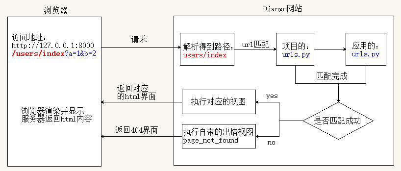

URL配置
1. URL配置
一、需求
- 需求： 在浏览器访问URL地址
http://127.0.0.1:8000/users/index时，显示hello django信息 - 实现
- 需要编写一个视图函数
- 针对该视图函数配置访问路由
二、URL配置实现
对于url访问地址
http://127.0.0.1:8000/users/index?a=1，只需要根据users/index进行url配置。注意：前面为了简单，直接在项目下的
urls.py文件中进行配置，如下urlpatterns = [ ... url(r'^users/index$', views.index), ]但为了减轻项目下的
urls.py文件的配置量，方便url的管理，会分别在两个urls.py文件中进行配置：项目下的
urls.py文件urlpatterns = [ # 包含users模块下的urls.py # 参数1： 匹配url的正则表达式 # 参数2： 调用 inclucde 函数，包含users模块下的urls.py url(r'^users/', include('users.urls')), ]users应用下的urls.py文件 (此文件默认不存在，需要自己创建)urlpatterns = [ # 配置url和视图函数，需要调用url函数，并传入参数 # 参数1： 匹配url的正则表达式（需要用 ^ 和 $ 匹配开头和结尾） # 参数2： url匹配成功执行的视图函数 url(r'^index$', views.index), ]URL配置示例参考：

2. URL匹配流程
URL匹配流程（路由解析顺序）：

URL匹配流程说明
- 域名、端口、端口后的
/，以及查询字符串（问号后面的键值参数）不参与匹配 - 先到项目下的
urls.py进行匹配，再到应用的urls.py匹配 - 根据url配置的先后顺序，从上到下进行URL匹配
- 在项目下匹配成功的URL部分会去掉，剩下的部分继续到应用下作匹配
- 如果匹配成功，Django会调用对应的视图函数，返回响应内容给浏览器显示
- 如果最终匹配不成功,
Django会给浏览器返回404错误
3. 关于 /index 的两种配置方式
需求： 在浏览器访问URL地址 http://127.0.0.1:8000/index 时，显示 hello django 信息
配置方式一： 只在项目的urls.py中配置，应用下不需要作配置
# 项目的urls.py
urlpatterns = [
url(r'^index$', views.index),
]
配置方式二： 在项目和应用的urls.py中都进行配置
# 项目的urls.py
urlpatterns = [
# 此处正则配置^, 表示任务的字符串都可以匹配成功
url(r'^', include('users.urls')),
]
# 应用的urls.py
urlpatterns = [
url(r'^index$', views.index),
]